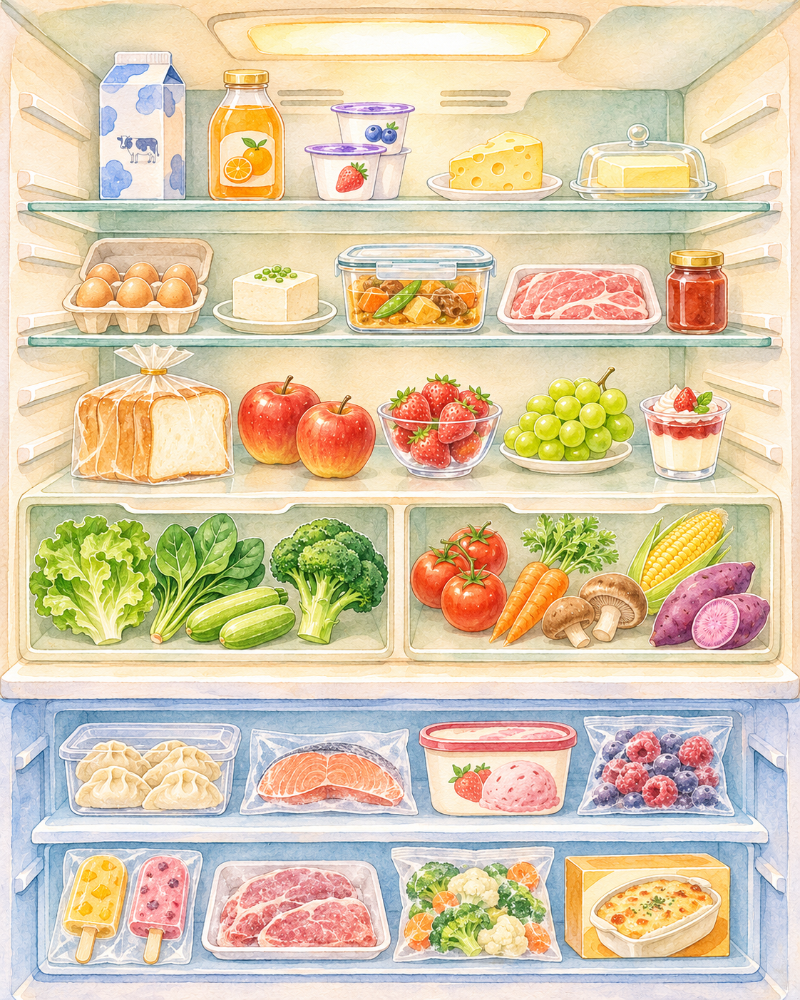

My kitchen notebook · living inventory
Dear Fridge, what’s inside?
A little kitchen that remembers what you have — one shelf, one meal, one gentle reminder at a time.
Freshness
Food nearing its date asks for attention; food in its best window is wrapped in a warm moving glow.
